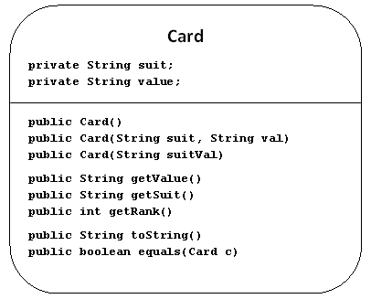
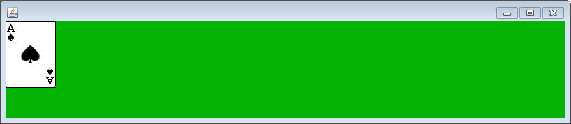
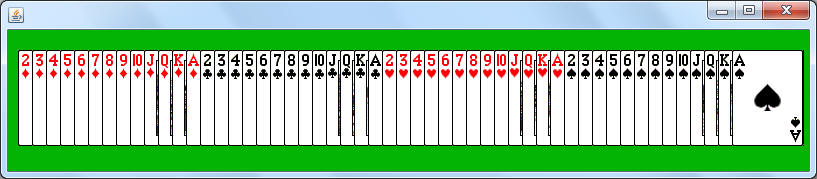

For this project you will need the Sorter class from the previous assignments.
sacco.jar already has a Card class that has a few helpful methods. Read through the api HERE.

One thing to notice is that there are three different ways to construct a Card:
public Card() //Constructs a completely randomized Card
public Card(String v, String s) //Constructs a card with the given suit and value. Either the full String or the single character versions will work ( ex. a v value of "A" and "Ace" will produce the same card.
Create a class named CardRunners and add the following method to it:
public static void manyCards()
{
Card[] cards = new Card[50];
for( int i =0; i < cards.length; i++)
{
cards[i] = new Card("A","S");
}
printCards(cards);
}
public static void printCards(Card[] theCards)
{
System.out.print("["+theCards[0]);
for( int i = 1; i < theCards.length; i++)
{
System.out.print(", "+theCards[i]);
}
System.out.println("]");
}
If you run this, you should see that you've created 50 Ace of Spades. Since this constructor is overloaded, we can get random cards by making a little adjustment.
Go to the line that says cards[i] = new Card("A","S"); and replace it with the line cards[i] = new Card();
Note that this is a completely different constructor, and in this case it randomizes the value and suit. Run the method now and you should get fifty random cards printed out.
Using inheritance to create a better Card
While the Card class is useful for creating Cards, we can make Card even better. Since we've been working with Sorter's selecttionSort method, it would be nice if it was comparable so we could sort the array of Cards that we've created.
It's time to create a class named SCard, which will have the same purpose as the Card class, except it should implement Comparable so that the array can be sorted by our Sorter class.
Don't repeat code!
If we want to have a class that acts like the Card class, we want to use inheritance to get the job done. Create a class named SCard that has the following header:
import sacco.*;
public class SCard extends Card
Leave the rest of the class empty for now. At the moment we have done a very minimal amount of inheritance By saying SCard extends Card we are asking that this method inherit all the instance fields and methods of the Card class.
Go back to the CardRunner class and change all the words 'Card" to 'SCard'. Since the SCard class is just a bare extension of the Card class, running the method should get the same result as before.
Why Does printCards work with SCards?
When we updated the CardRunner to have an SCard array, we changed the type that was being passed into the parameter of the printCards method. The method's definition says that it takes in an array of Cards, but an array of SCards are being passed.
The answer is: Because Polymorphism!
Since every SCard extends from Card, every SCard IS-A Card. Every method that a Card has, an SCard has as well. The only thing that the printCards method really needed from each Card was the toString method, which is used when printing. Polymorphism allows us to reuse this method without having to replace any of the Code
Making SCard Better with compareTo
Our real goal is to make the SCard class work with the Sorter class. That means it has to implement the Comparable interface.
SCard's new header should read:
public class SCard extends Card implements Comparable<SCard>
This means that you have to add the following method:
public int compareTo(SCard other)
This compareTo method will still return a negative, positive, or a zero based on the following rules:
if this SCard's rank is less than the parameter SCard's rank, a negative value is returned
if this SCard's rank is greater than the parameter SCard's rank, a positive value is returned
if the two SCards have equal ranks, then the suits are compared according to the following list:"Clubs","Diamonds","Hearts","Spades".
How to access the rank and suit:
Inheritance means that the SCard has all the variables that the Card class has, but there is a problem. Since the suit and value are private in Card, you have no direct access to them. The way that you must interact with them is through the public methods that you've inherited.
The two important methods that have been inherited are the getRank() and getSuit() method. When you are writing the compareTo, you will want to use the lines this.getRank() and other.getRank() to access the values from the two important SCards.
Adding a useful method to help with sorting:
The hard part about the compareTo method is that you have to find the strength of a suit in order to sort the SCards properly, but Card never had a getSuitRank method. Since the purpose of inheritance is to build upon the original class, let's add the following to the SCard class:
public int getSuitRank()
This method should return a 0 for "Clubs", a 1 for "Diamonds", a 2 for "Hearts", and a 3 for "Spades". If nothing is found, return a -1.
Now that this helper method is finished, make sure that you use it in your compareTo method in the case that the ranks are ties.
To test out and see if your sorter works, add the following two lines to the manyCards method:
Sorter.selectionSort(cards); printCards(cards);
The cards are sorted using the compareTo method that you just created, and then printed again so that we can see them on the terminal. Run the method and it should print out a sorted version of the SCards. Double check to make sure that for cards of the same rank, they go int "Clubs", "Diamonds", "Hearts", "Spades" order. If not, fine tune your compareTo method.
Creating a Deck:
Go to the CardRunners class and add a method with the following header:
//returns an array of all 52 possible SCards public static SCard[] deckOfCards()
The purpose of the method is to not just create a random array, but to create specifically all 52 SCards in an array and to return that array.
Problem: Constructors are not automatically inherited
When you extend a class you automatically inherit all the public methods, and these can be used immediately, but Constructors are treated differently. If no Constructors are supplied, the default constructor (the one with no parameters) is inherited. This is what we have done so far. That is why cards[i] = new SCard(); is working.
For the sake of the deckOfCards method, we will want to add the constructor that takes in two Strings as parameters.
Add a constructor to SCard with the following header:
public SCard(String value, String suit)
How to set up the instance fields:
The Constructor's job is to put values into the instance fields, but our problem is that we are extending, so we don't have direct access to the instance fields. What we do get when extending is the ability to call the constructor from the super-class. Since we want the SCard to be set up the exact same way, we'll call that comstructor using the keyword super. The full constructor's code is below:
public SCard(String value, String suit)
{
super(value, suit);
}
What this means is that the SCard's constructor calls the Card constructor (using the keyword super), passing the value and suit String as parameters. The idea is that the Card construcor has access to those instance fields and can initialize them correctly, so passing them along should work fine.
A Sudden Problem:
If you compile your program now, you'll see that now the CardRunners class is now unhappy with the line:
cards[i] = new SCard();
The previous default constructor that was being used was automatically used for SCard since we hadn't prvided a single constructor. Now that we've just added a constructor that is not the default constructor, Java doesn't automatically add the default constructor. That makes this line no longer function.
Add the following constructor:
public SCard()
This should be one line, that makes a call to super(); This implies that we want the default constructor to work the same way that Card's default constructor worked. Now that we've specifically defined the default constructor, that should put an end to the compiling problem.
Finishing the deckOfCards method:
Now that we can use two Strings to create an SCard, we can finish the deckOfCards method. The best way to do it is to create two local String[] in the deckOfCards method:
String[] vals = {"2","3","4","5","6","7","8","9","T","J","Q","K","A"};
String[] suits = {"D","C","H","S"};
Start by creating an array of SCards that is size 52
Using a nested for loop to create every combination of suit an value possible. Each loop should be responsible for the index of one of the arrays. You will also need to have a separate int to represent the index of the SCard[] that you're creating, since it isn't 2D. Don't forget to return the array after you've constructed an SCard into every index.
Test the deckOfCards method by adding the following method to the CardRunners class:
public static void deckTest()
{
SCard[] deck = deckOfCards();
printCards(deck);
}
Running this should print a list of all the cards in the deck. They should appear in a pretty clear pattern because of the looping.
Adding more instance fields: The Graphical Card
Another useful part of inheritance is that you can also add more instance fields to the object that you're extending (we're extending the information that his object can stor along with the methods that it has)
The SCard class holds the two Strings, but we would like it to also be able to represent itself Graphically. This means that just having th inherited value and suit will not be sufficient. Add the following instance fields to the SCard class:
private Picture cardPic; private int x, y, width, height;
Now we've got everything to make an SCard able to keep track of a location and Picture to represent it. We've just got to modify it a little bit. Mostly the constructor.
Go the constructor with two parameters. Ad the moment it does nothing but call the super-class' constructor. Previously that was fine to set up the instance fields, but now there are more instance fields to deal with. After the super call, assign zeros to x and y, and assigns a width of 72 and a height of 96. These are the width an height of all the card images are in the sacco.jar.
As for the cardPic. All of the Card images are stored in the sacco.jar cards/ folder. To load the Ace of Spades into the cardPic variable, it would look like the following:
cardPic = Picture.loadFromJar("cards/AS.png");
Notice the AS denotes which card is to be loaded.
The two pieces of the card are given to you as parameters. It's your job to stitch them togethre and make sure the right image is loaded.
More methods to add:
Now that there's new instance fields, add the following methods to the SCard class that deal with the new instance fields:
public int getX() public int getY() public int getWidth() public int getHeight() public void setX(int x) public void setY(int y)
Also add a paintSelf method that uses Canvas's drawPicture method to paint the cardPic
public void paintSelf(Canvas c)
Testing out with the CardViewer class
Copy the following class into your project. It's a SaccoWindow that handles an array of SCards.
import sacco.*;
public class CardViewer extends SaccoWindow
{
private SCard[] cards;
public CardViewer(SCard[] cards)
{
this.cards = cards;
this.setSize(800,140);
}
public void paintWindow(Canvas c)
{
c.setColor(4,180,4);
c.fillRectangle(-50,-50,900,240);
for( int i = 0; i<cards.length; i++)
{
cards[i].paintSelf(c);
}
}
public SCard[] getCards()
{
return cards;
}
}
Now add the following method to the CardRunners class, which gives a deck of SCards to the CardViewer and then displays it.
public static void cardView()
{
SCard[] deck = CardRunners.deckOfCards();
CardViewer view = new CardViewer(deck);
view.setVisible(true);
}
At the moment all the x's and y's are 0, so you should get an image like the following:

Looks like the CardViewer class needs a way to space out the SCards. Add a method with the following header to the CardViewer class
public void spaceCards()
This method will loop through all of the SCards in the array and set each one's x value 14 pixels apart from the one before it. Go to the constructor and make sure that this.spaceCards() is called as the last line. Run the program one more time

One More Function:
For turn-in, add the following method to the CardViewer class:
public void onMousePress(MouseEvent m)
{
Sorter.selectionSort(cards);
this.spaceCards();
}
This method sorts all the cards by rank and suit according the compareTo method. It then calls the sortCards method to make sure that each card's location matches its place in the list.